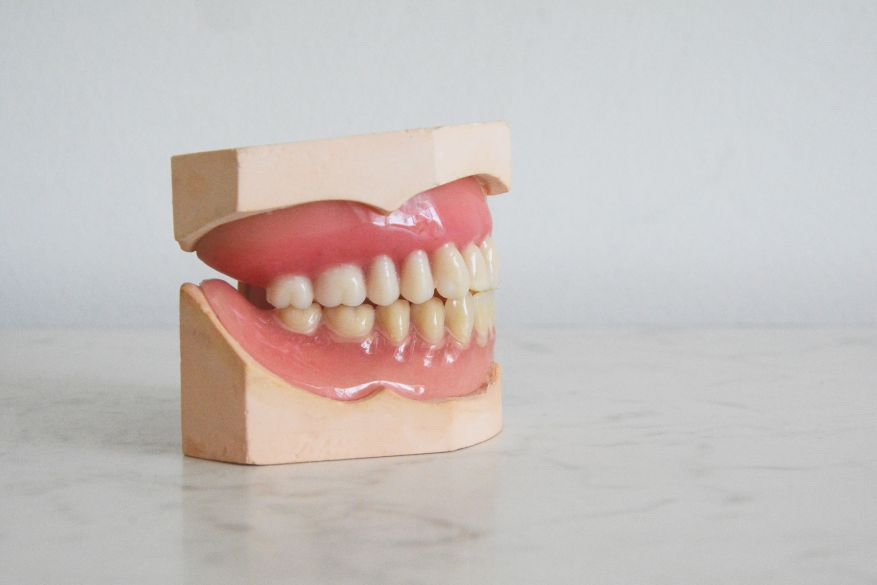

2010년부터 치과 정보를 알리기 위해 운영한 블로그가 초기 치과관련 파위 블로그로 자리잡게 되었습니다. 그 여파로 제가 운영하던 치과 데스크에는 치과관련 정보를 문의하는 전화가 전국에서 하루에도 수십통씩 걸려왔습니다. 데스크에 근무하는 직원이 너무 많은 문의 전화를 받기 힘들다며 퇴사를 원할 정도가 되어, 일부 글을 비공개 처리하며 생각보다 많은 사람들이 제대로 된 치과정보를 찾아 헤매고 있다는 사실을 깨닫게 되었습니다.
치과 정보는 어려울 수 있습니다. 설명을 들어도 잘 이해가 안되거나 선입견이나 잘못된 정보때문에, 진료받는 치과에 막연한 불신이 생기기도 합니다. 이러한 불신과 부족한 구강상식으로 인해 구강관리를 제대로 하지 못하고 치과치료를 미루게 되면 치과진료비 지출 또한 높아집니다. 최근 치과질환이 우리나라 국민 다빈도질환 1위를 차지했고, 우리나라 어린이의 충치발생률은 >OECD국가 중 1위라는 불명예를 얻기도 했습니다. 이러한 사회적 현상을 해결하는데 작게나마 일조할 수 있기를 희망합니다.s 십수년간 환자분들을 만나고 진료했던 경험과 수집한 다수의 치과 관련 데이터를 활용하여, 국민 구강건강 증진에 도움이 되는 치과정보와 구강관리 솔루션을 제공하고자 합니다.